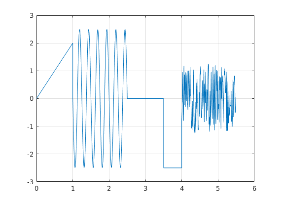

Contents
3 Laboratorijas darbs
Raimonds Neimanis 171REB112 - REBCO4, 1.kurss
%Uzdevums bija izveidot gabalveidu signalu montažu, pēč atsevišķa varianta
Gabalveida sign?la mont???
Sinuso?da
%t_sin = 1:0.01:2.5; % y_sin = A0+A*sin(2*pi*f*(t-delay)) %A0 = 0; A = -2.5; T = (2.5-1)/6; f = 1/T; delay = 1; %y_sin = A0+A*sin(2*pi*f*(t_sin-delay)); %plot(t_sin,y_sin)
Line?ri main?gs sign?ls
%t_saw = 0:0.01:1; % y_saw = k*t(t_saw-delay) %yA = 0; yB = 2; tA = 0; tB = 1; delay = 0; %k = (yA-yB)/(tA-tB) %l?knes sl?puma koeficents % delay - lai noteiktu delayr ir j?skat?s krustpunkts ar t asi (y=0) %y_saw = k*(t_saw-delay); %plot(t_saw,y_saw)
Konstantes sign?ls
%t_const = 2.5:0.01:3.5; %y_const = zeroes(1,1) - 2.5; %y_const = ones(1,1)*2.5; % nav korekti, ja t_const izmain?s, tad y_const nemain?sies %y_const = zeros(size(t_const)); y_const = zeros(size(t_const)); %plot(t_const,y_const)
Nulles signals
%t_zero = 3.5:0.01:4; %y_zero = zeros(size(t_zero)) -2.5;
trok??a sign?ls
%t_noise = 4:0.01:5.5; %y_noise = rand(size(t_noise)) * 2.50 - 1.25; %plot(t_noise,y_noise)
Sign?lu apvieno?ana
%t = [t_saw,t_sin,t_const,t_zero,t_noise]; %y = [y_saw,y_sin,y_const,y_zero,y_noise]; %plot(t,y) %ylim([-3 3]) %grid on function y = lab3_demo_fun(t)
t = 0:0.01:5.5; %t_zero = 3.5:0.01:4; t_zerof=(t>=3.5)&(t<=4);t_zero = t(t_zerof); %t_sin =1:0.01:2.5; t_sinf=(t>=1)&(t<2.5);t_sin=t(t_sinf); %t_noise = 4:0.01:5.5; t_noisef=(t>=4)&(t<5.5);t_noise=t(t_noisef); %t_const = 2.5:0.01:3.5; t_constf=(t>=2.5)&(t<=3.5);t_const=t(t_constf); %t_saw = 0:0.01:1; t_sawf = (t>=0)&(t<=1);t_saw=t(t_sawf);
sinusoīda
%y_sin=A0+A*sin(2*pi*f*(t-delay)) A0=0; A=-2.5; T = (2.5-1)/6; f = 1/T; delay = 1; y_sin=A0+A*sin(2*pi*f*(t_sin-delay)); %plot(t_sin,y_sin)
Lineāri mainīgs signāls
k = (yA-yB)/(tA-tB) slīpuma koeficients
k = (0-2)/(0-1);
delay = 0;
y_saw = k*(t_saw-delay);
%plot(t_saw,y_saw)
konstantes signāls
y_const = zeros(size(t_const));
%plot(t_const,y_const)
nulles signāls
y_zero = zeros(size(t_zero))-2.5;
%plot(t_zero,y_zero)
trokšņa signāls
y_noise = 2.5*rand(size(t_noise))-1.25;
%plot(t_noise,y_noise)
signālu apvienošana
t = [t_saw,t_sin,t_const,t_zero,t_noise];
y = [y_saw,y_sin,y_const,y_zero,y_noise];
plot(t,y)
ylim([-3 3])
grid on
ans =
Columns 1 through 7
0 0.0200 0.0400 0.0600 0.0800 0.1000 0.1200
Columns 8 through 14
0.1400 0.1600 0.1800 0.2000 0.2200 0.2400 0.2600
Columns 15 through 21
0.2800 0.3000 0.3200 0.3400 0.3600 0.3800 0.4000
Columns 22 through 28
0.4200 0.4400 0.4600 0.4800 0.5000 0.5200 0.5400
Columns 29 through 35
0.5600 0.5800 0.6000 0.6200 0.6400 0.6600 0.6800
Columns 36 through 42
0.7000 0.7200 0.7400 0.7600 0.7800 0.8000 0.8200
Columns 43 through 49
0.8400 0.8600 0.8800 0.9000 0.9200 0.9400 0.9600
Columns 50 through 56
0.9800 1.0000 1.0200 1.0400 1.0600 1.0800 1.1000
Columns 57 through 63
1.1200 1.1400 1.1600 1.1800 1.2000 1.2200 1.2400
Columns 64 through 70
1.2600 1.2800 1.3000 1.3200 1.3400 1.3600 1.3800
Columns 71 through 77
1.4000 1.4200 1.4400 1.4600 1.4800 1.5000 1.5200
Columns 78 through 84
1.5400 1.5600 1.5800 1.6000 1.6200 1.6400 1.6600
Columns 85 through 91
1.6800 1.7000 1.7200 1.7400 1.7600 1.7800 1.8000
Columns 92 through 98
1.8200 1.8400 1.8600 1.8800 1.9000 1.9200 1.9400
Columns 99 through 105
1.9600 1.9800 2.0000 0 -0.6217 -1.2044 -1.7114
Columns 106 through 112
-2.1108 -2.3776 -2.4951 -2.4557 -2.2621 -1.9263 -1.4695
Columns 113 through 119
-0.9203 -0.3133 0.3133 0.9203 1.4695 1.9263 2.2621
Columns 120 through 126
2.4557 2.4951 2.3776 2.1108 1.7114 1.2044 0.6217
Columns 127 through 133
0.0000 -0.6217 -1.2044 -1.7114 -2.1108 -2.3776 -2.4951
Columns 134 through 140
-2.4557 -2.2621 -1.9263 -1.4695 -0.9203 -0.3133 0.3133
Columns 141 through 147
0.9203 1.4695 1.9263 2.2621 2.4557 2.4951 2.3776
Columns 148 through 154
2.1108 1.7114 1.2044 0.6217 0.0000 -0.6217 -1.2044
Columns 155 through 161
-1.7114 -2.1108 -2.3776 -2.4951 -2.4557 -2.2621 -1.9263
Columns 162 through 168
-1.4695 -0.9203 -0.3133 0.3133 0.9203 1.4695 1.9263
Columns 169 through 175
2.2621 2.4557 2.4951 2.3776 2.1108 1.7114 1.2044
Columns 176 through 182
0.6217 0.0000 -0.6217 -1.2044 -1.7114 -2.1108 -2.3776
Columns 183 through 189
-2.4951 -2.4557 -2.2621 -1.9263 -1.4695 -0.9203 -0.3133
Columns 190 through 196
0.3133 0.9203 1.4695 1.9263 2.2621 2.4557 2.4951
Columns 197 through 203
2.3776 2.1108 1.7114 1.2044 0.6217 0.0000 -0.6217
Columns 204 through 210
-1.2044 -1.7114 -2.1108 -2.3776 -2.4951 -2.4557 -2.2621
Columns 211 through 217
-1.9263 -1.4695 -0.9203 -0.3133 0.3133 0.9203 1.4695
Columns 218 through 224
1.9263 2.2621 2.4557 2.4951 2.3776 2.1108 1.7114
Columns 225 through 231
1.2044 0.6217 0.0000 -0.6217 -1.2044 -1.7114 -2.1108
Columns 232 through 238
-2.3776 -2.4951 -2.4557 -2.2621 -1.9263 -1.4695 -0.9203
Columns 239 through 245
-0.3133 0.3133 0.9203 1.4695 1.9263 2.2621 2.4557
Columns 246 through 252
2.4951 2.3776 2.1108 1.7114 1.2044 0.6217 0
Columns 253 through 259
0 0 0 0 0 0 0
Columns 260 through 266
0 0 0 0 0 0 0
Columns 267 through 273
0 0 0 0 0 0 0
Columns 274 through 280
0 0 0 0 0 0 0
Columns 281 through 287
0 0 0 0 0 0 0
Columns 288 through 294
0 0 0 0 0 0 0
Columns 295 through 301
0 0 0 0 0 0 0
Columns 302 through 308
0 0 0 0 0 0 0
Columns 309 through 315
0 0 0 0 0 0 0
Columns 316 through 322
0 0 0 0 0 0 0
Columns 323 through 329
0 0 0 0 0 0 0
Columns 330 through 336
0 0 0 0 0 0 0
Columns 337 through 343
0 0 0 0 0 0 0
Columns 344 through 350
0 0 0 0 0 0 0
Columns 351 through 357
0 0 -2.5000 -2.5000 -2.5000 -2.5000 -2.5000
Columns 358 through 364
-2.5000 -2.5000 -2.5000 -2.5000 -2.5000 -2.5000 -2.5000
Columns 365 through 371
-2.5000 -2.5000 -2.5000 -2.5000 -2.5000 -2.5000 -2.5000
Columns 372 through 378
-2.5000 -2.5000 -2.5000 -2.5000 -2.5000 -2.5000 -2.5000
Columns 379 through 385
-2.5000 -2.5000 -2.5000 -2.5000 -2.5000 -2.5000 -2.5000
Columns 386 through 392
-2.5000 -2.5000 -2.5000 -2.5000 -2.5000 -2.5000 -2.5000
Columns 393 through 399
-2.5000 -2.5000 -2.5000 -2.5000 -2.5000 -2.5000 -2.5000
Columns 400 through 406
-2.5000 -2.5000 -2.5000 -2.5000 -0.7623 -0.4329 0.9508
Columns 407 through 413
-0.0722 -0.2401 -0.8019 1.1723 -0.2314 0.8612 0.2883
Columns 414 through 420
-0.3085 0.9430 0.7121 -0.0876 0.7849 0.9961 -0.1769
Columns 421 through 427
-0.4142 0.2416 1.0050 0.5052 -0.3064 0.5874 1.1353
Columns 428 through 434
0.1070 0.1003 -0.4722 -1.0719 -0.7950 -1.0175 -0.0913
Columns 435 through 441
-1.2267 1.0376 0.3569 -1.2465 -1.1740 -0.7288 -0.1126
Columns 442 through 448
-0.9318 -1.2284 0.5677 -0.3647 0.7011 -0.1584 -0.1586
Columns 449 through 455
-1.1270 -1.1259 -1.0222 0.2351 -0.6473 0.8534 0.8930
Columns 456 through 462
1.1590 -0.0278 -0.6992 -0.6845 0.0920 0.6553 -0.3811
Columns 463 through 469
-0.0969 0.3483 1.0433 -0.8461 0.5391 0.1943 -0.1668
Columns 470 through 476
0.9606 -0.2674 -0.8026 0.3333 0.3100 -0.4301 0.7574
Columns 477 through 483
1.2487 1.2024 -0.9324 -0.6694 -1.1909 0.2686 -0.9730
Columns 484 through 490
-0.2314 0.9602 0.1203 -0.3275 -0.7291 -0.1476 1.1405
Columns 491 through 497
-0.9399 -0.0731 0.8922 -1.1415 0.4791 1.1975 -0.5418
Columns 498 through 504
-0.9155 0.4632 1.0236 0.2772 1.0000 -0.7664 0.6361
Columns 505 through 511
-0.3843 -0.2034 -0.8607 0.7975 0.3123 0.5964 0.7628
Columns 512 through 518
-1.0819 1.1270 -0.0061 0.6379 0.6060 0.8278 -0.8587
Columns 519 through 525
-0.1067 0.2953 1.0805 0.8377 0.9886 0.2063 0.2069
Columns 526 through 532
0.8873 -1.1628 0.9636 -0.2307 -1.1590 0.6154 -0.8629
Columns 533 through 539
-0.8902 0.2649 -0.6138 -0.4396 -0.2455 -0.2341 -0.2845
Columns 540 through 546
0.2745 -0.8328 -0.7798 -1.0134 -0.4420 0.6740 -0.6647
Columns 547 through 553
0.6009 0.4820 0.8102 0.8199 -0.5166 -0.4766 0.0576
 Secinājumi
%Ko es sapratu? Ir doti 5 veidu signali, (sinusoida, lineari mainigs %signals, konstantes signals, nuļu signals, trokšņa signals), kurus vajag %novietot pareizi uz grafika. %Ar komandu (t_sin;t_saw;t_const;t_zero;t_noise un y_sin; y_saw; y_const; %y_zero; y_noise;) palīdzibu es devu atbilstoši koordināti manam grafikam. %Pēc tam es apvienoju visus signalus ar komandiem t = [...] un y = [...] %Un ar komandu plot, un grid on, mēs taisam grafiku. %Bet tālak mums ir vajadzīgs parvietot šo signalu, lab3_fun, to daram ar %komandu function y = lab3_demo_fun(t), taisam limits t asi (t = %0:0.01:5.5;) un ar komandiem (t_zerof;t_sinf;t_noisef;t_constf;t_sawf mes %taisam koordinatus no kurieniem un līdz kurienem būs mūsu signali, ka arī %agrāk apvienojam visus signalus ar t = [...] un y = [...], ar komandu plot %zimejam grafiku un mana gadijuma veidojam limits y asei. Viss mūsu %funkcija ir gatava un strāda pareizi